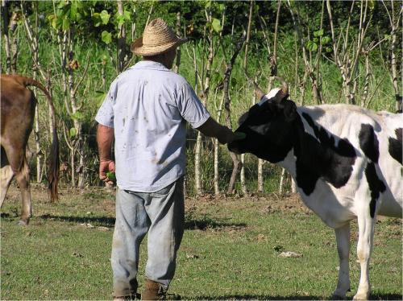
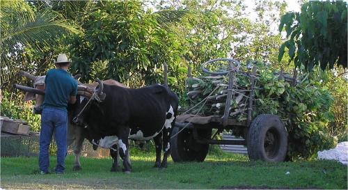
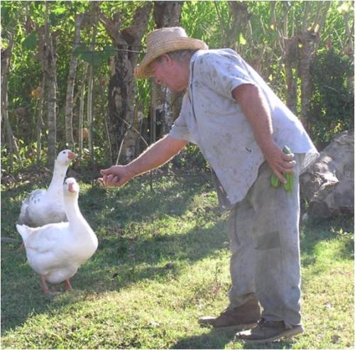

Human - animal relations in organic agriculture (IFOAM)
{kind=link}
{kind=link}
This chapter is about the relation between humans and animals when they interact directly. As humans, we as humans take animals into our households, and care for them. This means that we have the responsibility for them and their wellbeing. It requires knowledge about animals to treat them well in ways which respect them and their nature.
Relatedness between humans and animals
There is relatedness between humans and animals: we as humans take animals into our households, and take them in our care. We use the animals for many purposes. This means that we have the responsibility for them and their wellbeing. This chapter is about how we as humans regard and treat animals.
It is important always to remember that animals are sentient beings. They can feel and sense, and they have feelings, such as fear, anxiety, restlessness, and at the other end of the scale: they can be satisfied, content and happy. There is no doubt that our attitude to animals - the way in which we view them and perceive them as fellow living beings - affects how we treat them in practice and how we treat each other.
One of Mahatma Gandhi's great quotations is: 'The greatness of a nation and its moral progress can be judged by the way its animals are treated'. This indicates how we are related to animals: we have a moral and ethical obligation to treat animals well - animals are our fellow living beings on this Globe. How do we practice this in organic animal farming?
The first thing is to realize that respecting the animals and their nature is not only fair towards them, but it is also much easier than trying to work with force and against the animals' nature. Treating animals with care also gives us humans a pleasure and a good feeling. It is much more satisfying to work with happy animals, which are willing to work, than with animals that fear you and react abruptly and maybe even are dangerous to both you and themselves because of fear or anxiety.
Some humans think that it is necessary to treat animals with force to make them do what we want them to do, but that is not true. It is necessary to be clear to the animal what we want them to do, and to be consequent and consistent, but it should always be in a guiding, firm and loving way. If we use force and mistreat them, they become much more scared and resistant to our attempts to make them do what we want them to do. They become much more difficult to work with. This starts a vicious cycle: we become more and more upset about their 'stubborn' behavior and treat them more and more with force. This creates exactly the reactions from the animals which annoy us and make us treat them with less love and care. We have to break this pattern.
This chapter is about the relation between humans and animals when they interact directly. As humans, we want to be fair to the animal and care for them. Therefore, we also have to know about their needs.
Animal welfare in organic agriculture is about giving the animals living conditions which allow them to meet their natural needs as much as we can, and to intervene immediately if they are not well. This means that we have to organize our farms in ways, which allow them to meet their needs, and allow us to observe them so that we can intervene when necessary. How to organize farms this way is dealt with in other chapters on the infonet-biovision website
|  |
| Humans have the responsibility for the animals and their wellbeing, we have a moral and ethical obligation to treat animals well. |
| (c) Mette Vaarst |
See also our chapters on animal-health-promotion and animal husbandry
Live up to the organic principles when interacting directly with animals
|  |
| Be fair to draught animals, when you load them with goods to carry. Better to let carry two smaller loads even though it takes longer time, than than one too big load with the result of damaging your animal. |
| (c) Mette Vaarst |
The principles about ecology, care, health and fairness
The principles about ecology, care, health and fairness, formulated by IFOAM also form guidelines for how we as humans should treat the animals in a direct interaction. A lot of the recommendations below are linked to more than one of the organic principles.
Ecology
Learn about the animal's nature and give it opportunities to meet these needs:
- All animals need feed, water, shade, protection against heavy rain, possibilities to rest, to withdraw, and to have a social life in the way its species naturally will have a social life.
- All animal species have their natural needs. For example chicken have a natural need for dust bathing. All life situations also include some natural needs, e.g. giving birth requires surroundings which give an animal rest, because in nature they would withdraw when giving birth.
Fairness
see life from the animals' perspective, and always only put them in situations which they can handle. Support them when they meet new things, which can scare them.
- All forms of violence towards animals are unacceptable, full stop. This is beyond question. No beating, no kicking, no hitting, and do not force them to be under very restrictive conditions in small cages or boxes, or with tied legs. If they kick or attack us, it is ok to react immediately and in a way which closely relates to what the animal just did, e.g. if we shout and give it a clear indication that it just did something which we as humans cannot tolerate. This is very different from unmotivated beating or kicking, or beating and kicking just because we do not understand that the animal reacts because it is scared.
- Give animals shelter, shade, access to water and feed, and protect them from enemy animals.
- If animals are flock animals and naturally live in groups, they often have synchronic behavior. That is: they all want to do the same thing at the same time. Space should allow this: for example that the animals can eat at the same time, or lie down at the same time.
- Let mother animals be with their offspring as long as possible. Nobody teaches a young animal as well as grown-ups of the same species
- Let them choose as much as possible in their daily life: where to go, and what to do. E.g. give them access to lying areas and to shade and to feed and water.
- Transport animals calmly, and be fully aware that this can be a very scary situation for them. Be caring also when you load them to or from a truck, that they don't fall or hurt themselves. Take care when you drive, that they do not hurt themselves.
- Take time to let them explore new surroundings when you move them. This makes them much calmer. If you move them in a group, give them time so that they are not pushed too much together. If they can see where they walk, they will not hurt their legs. Sometimes animals are forced to walk or run in a group so closely that they have to lift their head. This causes that they cannot orient themselves and where they walk and therefore stumbles and falls and harm their joints and legs. This is particularly important when moving downhill, which is uncomfortable for most animals.
- Never move an animal from light into darkness. If you have to take an animal indoor from daylight: give them sufficiently time and treat them with care, because they do not like this. Likewise they do not like to walk through doors or around sharp corners without giving them time to explore.
- Be fair to draught animals, when you load them with goods to carry. Better to let carry two smaller loads even though it takes longer time, than than one too big load with the result of damaging your animal.
- Kill/slaughter animals in a humane way: try to take care that they are as little scared as possible, and kill them as painless and instant as possible. Best is to avoid slaughter and killing and let animals die a natural death.
- Be calm, talk with them, ease them down if they are scared in any situation, e.g. if they should be used to new routines, for example if you milk an animal for the first time.
- Never shout at animals, talk with them.
Health
- Give them good conditions to stay healthy, and support them through the way you take care of them on everyday basis.
- Equip draught animals with harnesses, and take care that the wagon or plough fit to their size. Take care that they do not get wounds and swellings.
- Do not only treat them with medicine when they are ill, but support the healing process by giving them care and rest and extra good living conditions.
Care
- Be around them,
- Get to know them so that you know clearly if they change behavior and then you can interact.
- Read them: which signals they give, and react and act on what you see.
- Think of them as sentient beings, and know that they can suffer, feel pain, frustration and pleasure - and give them good opportunities to feel the latter.
To put it very short: Give the animals a life which is worth living, seen from an animal perspective
How does the animal view us humans?
Animals are suggested to see us humans in five main ways:
-
As a danger. This is due to little or no contact, or to negative contact. If we are inconsistent in the way we handle animals, e.g. one day kind and another day violent, this is bad in the same way as negative contact.
-
As an enemy, asking too much from the animal, or being too fast or too impatient
-
As an indifferent object: humans are 'just there'
-
As a provider of food and water
-
As a social partner.
In organic farming, when we want to live up to the principles of care and fairness, we should be to the animals in ways which make them think of us as provider of feed and water, and as social partners, and definitely not as 'dangers'.
Learn about the animals and their nature
It requires knowledge about animals to treat them well in ways which respect them and their nature. You can find some knowledge about the animals under each animal species on this biovision website, and some can be developed in your daily life with the animals, if you act and react to their responses.
Teach your children about good animal welfare and care
Children often link directly to animals, especially to young animals. They are good in taking care of animals, when they are guided, and also taught what is good for the animal, and clearly told what is unacceptable.
Involve the children, when you interact with animals, when it is appropriate and not dangerous (e.g. if you move a bull from one place to another, children should be well protected and on a distance).
Give the children responsibilities and give them tasks which they can handle in relation to animals, e.g. feeding chicken or feeding the young animals. Always keep an eye on whether they do it or not, and correct them to help them doing it right.
Teach the children that careful and loving behavior towards animals creates a relation, which can be a pleasure not only for the animal - which become calm and trustful - but also to the human.
|  |
| It requires knowledge about animals to treat them well in ways which respect them and their nature. You can find some knowledge about the animals under each animal species on this biovision website, and some can be developed in your daily life with the animals, if you act and react to their responses. |
| (c) Mette Vaarst |
Review process
Dr. Mette Vaarst, veterinarian, and Gidi Smolders, agronomist, orgANIMprove
Information Source Links
- IFOAM Norms and Standards. Full title: 'The IFOAM Norms for organic production and processing, Version 2014. http://www.ifoam.org